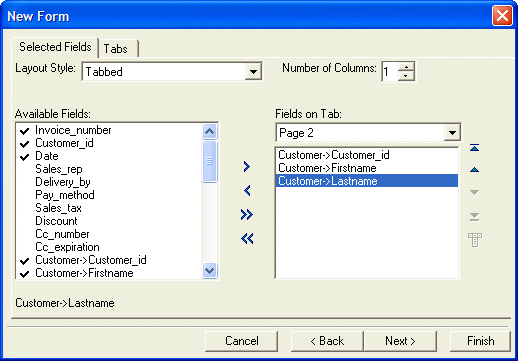

Using the New Form Genie
When you create a new form for a table or set, the New Form Genie lets you create customized form layouts in a fraction of the time that it would take to manually layout out a new form.
The New Form Genie lets you:
Select which fields from the table or set to include on the form
Create forms with tabbed objects and select which fields go on each tab page
Layout the fields on the form in multiple columns
Create forms with embedded browse objects
Assign a stylesheet to the form

To create a form with the New Form Genie :
Display the Forms tab of the Control Panel.
Click New.
In the Data Source list select the table or set that will provide the data.
Click Next >.
Select how to start the form design. The options are:
Blank Form - you can then drag fields from the Drag Drop List and controls from the Toolbox and place them on the form.
Default Form - you can then rearrange, delete or modify the fields on the form. This is often a good starting point for forms based on sets.
Custom Form - allows you to select the fields that appear on the form
Click Next >.
If you selected "Custom Form" in step 5, the Selected Fields tab appears. Otherwise, continue with step 12.
Select the Layout Style. The options are:
"Default (Single Column)"
"Multi-Column"
"Tabbed"
If you selected "Multi-Column" in step 8:
Enter a value in the Number of Columns field.
Select a column number from the Fields in Column drop-down list.
Select each field that you want to display on the column in the Available Fields list and click
 to add it to the Fields
in Column list. Click
to add it to the Fields
in Column list. Click  to add all fields to the
form.
to add all fields to the
form.Select each field that you want to remove from the column in the Fields in Column list and click
 . Click
. Click  to remove all fields from the column.
to remove all fields from the column.Use the
 ,
,  ,
,  , and
, and  buttons
to reorganize the fields within a column.
buttons
to reorganize the fields within a column.Select each of the remaining column numbers from the Fields in Column drop-down list and repeat steps 9c and 9e.
If you selected "Tabbed" in step 8:
The default design includes two tabs, plus regions above and below the tabs. To change the number of tabs display the Tabs tab.
To change a tab name, select it in the Tabs list, enter a new name in the Tab Name field, and click Change.
To delete a tab, select it in the Tabs list and click Delete.
To add a tab, select "
Tabs list, enter its name in the Tab Name field, and click Add. The default design has one column per tab. To change the number of columns on a tab, select the tab page in the Fields on Tab drop-down list, and change the value in Number of Columns.
Select each field that you wish to display from the Available Fields list, select a location from the Fields in Column drop-down list, and click
to add it to the Fields
on Tab list. Click to add all fields to the selected
destination.Select each field that you want to remove from an area on the form and click
. Click to remove all fields from this area.Use the
, , , and buttons
to reorganize the fields within an area on the form.Click Next >.
Select a design for the form from the Stylesheet list. Refer to Overview of Stylesheets to learn more about stylesheets.
Click Next >.
Optionally, change the Horizontal and Vertical Spacing Between Fields.
Optionally, click Show Xbasic to see the code that will create the form.
Click Finish.
If you select to create a new form, starting with the Default Form (containing all of the fields in the table or set), the New Form Genie will create a form with as many tabs as Needed to display all of the fields in the underlying table or set.
See Also
Placing a Field on a Form, Using the Drag and Drop List, Setting the Tab Order